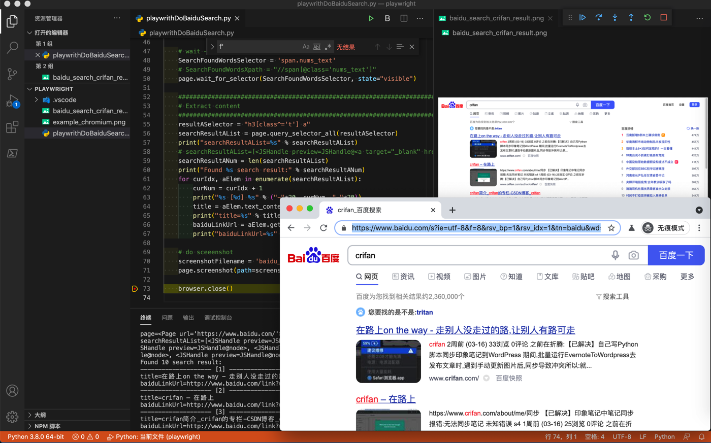

百度搜索自动化
此处给出用playwright模拟百度搜索，即百度搜索自动化的完整例子。
代码
- 文件下载：playwrithDemoBaiduSearch.py
- 贴出代码
# Function: Playwright demo baidu search
# Author: Crifan Li
# Update: 20210331
from playwright.sync_api import sync_playwright
# here use sync mode
with sync_playwright() as p:
chromiumBrowserType = p.chromium
print("chromiumBrowserType=%s" % chromiumBrowserType)
browser = chromiumBrowserType.launch(headless=False)
# chromiumBrowserType=<BrowserType name=chromium executable_path=/Users/limao/Library/Caches/ms-playwright/chromium-857950/chrome-mac/Chromium.app/Contents/MacOS/Chromium>
print("browser=%s" % browser)
# browser=<Browser type=<BrowserType name=chromium executable_path=/Users/limao/Library/Caches/ms-playwright/chromium-857950/chrome-mac/Chromium.app/Contents/MacOS/Chromium> version=90.0.4430.0>
page = browser.new_page()
print("page=%s" % page)
# page=<Page url='about:blank'>
################################################################################
# Open url
################################################################################
page.goto('http://www.baidu.com')
print("page=%s" % page)
# page=<Page url='https://www.baidu.com/'>
################################################################################
# Input text
################################################################################
searchStr = "crifan"
SearchInputSelector = "input#kw.s_ipt"
# page.click(SearchInputSelector)
page.fill(SearchInputSelector, searchStr)
################################################################################
# Trigger search
################################################################################
EnterKey = "Enter"
# Method 1: press Enter key
# page.keyboard.press(EnterKey)
# Method 2: locate element then click
SearchButtonSelector = "input#su"
page.press(SearchButtonSelector, EnterKey)
# wait -> makesure element visible
SearchFoundWordsSelector = 'span.nums_text'
# SearchFoundWordsXpath = "//span[@class='nums_text']"
page.wait_for_selector(SearchFoundWordsSelector, state="visible")
################################################################################
# Extract content
################################################################################
resultASelector = "h3[class^='t'] a"
searchResultAList = page.query_selector_all(resultASelector)
print("searchResultAList=%s" % searchResultAList)
# searchResultAList=[<JSHandle preview=JSHandle@<a target="_blank" href="http://www.baidu.com/link?…>在路上on the way - 走别人没走过的路,让别人有路可走</a>>, <JSHandle preview=JSHandle@node>, 。。。, <JSHandle preview=JSHandle@node>]
searchResultANum = len(searchResultAList)
print("Found %s search result:" % searchResultANum)
for curIdx, aElem in enumerate(searchResultAList):
curNum = curIdx + 1
print("%s [%d] %s" % ("-"*20, curNum, "-"*20))
title = aElem.text_content()
print("title=%s" % title)
# title=在路上on the way - 走别人没走过的路,让别人有路可走
baiduLinkUrl = aElem.get_attribute("href")
print("baiduLinkUrl=%s" % baiduLinkUrl)
# baiduLinkUrl=http://www.baidu.com/link?url=fB3F0xZmwig9r2M_1pK4BJG00xFPLjJ85X39GheP_fzEA_zJIjX-IleEH_ZL8pfo
# do sceeenshot
screenshotFilename = 'baidu_search_%s_result.png' % searchStr
page.screenshot(path=screenshotFilename)
browser.close()
效果
视频
图

输出
chromiumBrowserType=<BrowserType name=chromium executable_path=/Users/limao/Library/Caches/ms-playwright/chromium-857950/chrome-mac/Chromium.app/Contents/MacOS/Chromium>
browser=<Browser type=<BrowserType name=chromium executable_path=/Users/limao/Library/Caches/ms-playwright/chromium-857950/chrome-mac/Chromium.app/Contents/MacOS/Chromium> version=90.0.4430.0>
page=<Page url='about:blank'>
page=<Page url='https://www.baidu.com/'>
searchResultAList=[<JSHandle preview=JSHandle@<a target="_blank" href="http://www.baidu.com/link?…>在路上on the way - 走别人没走过的路,让别人有路可走</a>>, <JSHandle preview=JSHandle@node>, <JSHandle preview=JSHandle@node>, <JSHandle preview=JSHandle@node>, <JSHandle preview=JSHandle@node>, <JSHandle preview=JSHandle@node>, <JSHandle preview=JSHandle@node>, <JSHandle preview=JSHandle@node>, <JSHandle preview=JSHandle@node>, <JSHandle preview=JSHandle@node>]
Found 10 search result:
-------------------- [1] --------------------
title=在路上on the way - 走别人没走过的路,让别人有路可走
baiduLinkUrl=http://www.baidu.com/link?url=fB3F0xZmwig9r2M_1pK4BJG00xFPLjJ85X39GheP_fzEA_zJIjX-IleEH_ZL8pfo
-------------------- [2] --------------------
title=crifan – 在路上
baiduLinkUrl=http://www.baidu.com/link?url=kmvgD1PraoULnnjUvNPQmwHFQ9uUKkXg_HWy0NI3xI11cV7evpdxyA_4FkVf3zLH
-------------------- [3] --------------------
title=crifan简介_crifan的专栏-CSDN博客_crifan
baiduLinkUrl=http://www.baidu.com/link?url=CHLWAQKOMgb23GmzVCZRIVze9kBNu6DIVoSWQqe21bWq_qZk2zDu_V3pDC1o1i5WC8qXAbUhaBIN8UO9Sjzxfa
-------------------- [4] --------------------
title=crifan的微博_微博
baiduLinkUrl=http://www.baidu.com/link?url=-QwlZ5SEmZD1R2QqdsK7ByUhxmIdX_hiFCX79hg9RTbQ11j5wXaBaYXegXU9WDk3
-------------------- [5] --------------------
title=Crifan的电子书大全 | crifan.github.io
baiduLinkUrl=http://www.baidu.com/link?url=Sgrbyd_pBsm-BTANKwSmyveSWvWj2_IqOOZzYw-SkG8tQ_C6Ccz88zZxHf3Eh1JA
-------------------- [6] --------------------
title=GitHub - crifan/crifanLib: crifan's library
baiduLinkUrl=http://www.baidu.com/link?url=NSZ5IzQ2Qag3CpGLMAbJer3QaAqI7qZOp2Ythiw6o8inoDX-5LqlzOKWTrMzQK5G
-------------------- [7] --------------------
title=在路上www.crifan.com - 网站排行榜
baiduLinkUrl=http://www.baidu.com/link?url=Tc4cbETNKpQXj-kX1pwSOcPG8l9ijRRPqokRSMHgB59rSn6GoWSBzCPu3ky3dN6Cu1pb-4HBZ2_YaVyS7qdDS_
-------------------- [8] --------------------
title=crifan的专栏_crifan_CSDN博客-crifan领域博主
baiduLinkUrl=http://www.baidu.com/link?url=OLkrWu8q9SRZuBN-KzEMO56f82IpIfvbOp-sU3jdjbVBPP3GXBw_8StJgYG-_QrK
-------------------- [9] --------------------
title=User crifan - Stack Overflow
baiduLinkUrl=http://www.baidu.com/link?url=t1rc0EGg33A-uJUiZHKkUWA8ETf6B5P8pBKo0yNCH-VTWluW3xqUlYRHjMz8bQdiN2mJROMhfkX6bY0db_bB_a
-------------------- [10] --------------------
title=crifan - Bing 词典
baiduLinkUrl=http://www.baidu.com/link?url=8z-3hYeLAQ8T4efOf4848LtAdpGdR1Ect9au4JIUB32bm2z412RDsMelFW1R2aIk